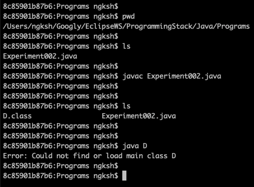

(i) On compilation [javac Experiment002.java], one class file D.class gets created.
(ii) Since java is a case sensitive language and main() has beenn written as Main(), therefore on execution the following error gets displayed:-
"Error: Could not find or load main class"
